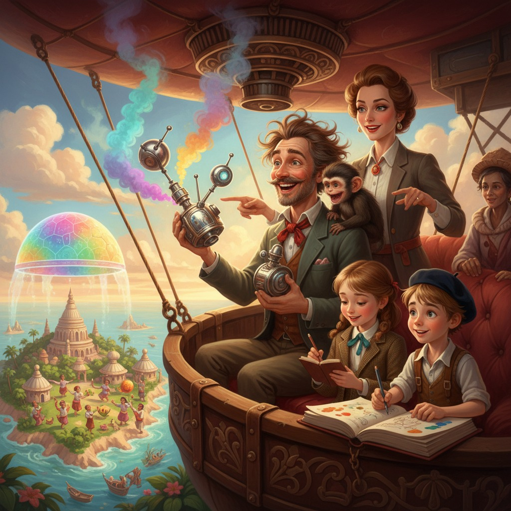

Аристарх Карамелькин-Загадочников был убеждён, что упаковал чемодан сам. Это была его роковая ошибка номер один. Роковая ошибка номер два заключалась в том, что он был в это искренне убеждён.
— Аристарх, — сказала его жена Виолетта, стоя у трапа частного самолёта с видом человека, который уже всё понял, но ещё не решил, смеяться или плакать. — Скажи мне, дорогой, зачем ты взял в отпуск чемодан из лаборатории? Тот самый, с красной наклейкой «НЕ ТРЯСТИ».
— Потому что... — Аристарх посмотрел на чемодан, потом на жену, потом снова на чемодан. — Это не мой чемодан.
— Браво, Ватсон, — пробормотала двенадцатилетняя Мирослава, открывая блокнот. — Записываю: папа перепутал чемоданы. Время: десять сорок две утра. Предположительная причина: витание в облаках на высоте примерно трёх тысяч метров над уровнем реальности.
Восьмилетний Тимофей тем временем уже зарисовывал ситуацию в альбом. Папа у него получился в виде рассеянного облака с усами.
— Красиво, — одобрил Профессор Квиркл, заглядывая через плечо. Во всяком случае, так это выглядело — маленький капуцин в крошечном красном жилете (Виолетта пыталась бороться с этой традицией, но в итоге сдалась) склонил голову именно под таким углом.
— Мы летим на остров Бумбурасса на пять дней, — подытожила Виолетта тоном, каким объясняют пациентам схему послеоперационного восстановления. — У тебя в чемодане, насколько я понимаю, нет ни одной пары нормальных брюк?
— Зато там есть «Устройство для создания идеального настроения путём проекции ароматов и звуков», — сообщил Аристарх с неожиданным оптимизмом. — Прозвище — «Настроитель». Я его ещё не до конца откалибровал, но в целом принцип работает. Почти всегда.
— «Почти» — моё любимое слово в твоём словаре, — сказала Виолетта. — Летим. На месте купишь брюки.
Остров Бумбурасса встретил их запахом соли, жареных бананов и какой-то торжественностью в воздухе. Местные жители носили яркие накидки, у всех были цветы в волосах, а вместо стандартной стойки выдачи багажа в аэропорту стоял пожилой мужчина с тележкой и выражением абсолютного философского спокойствия.
Именно этот мужчина — как выяснилось позже, уважаемый Мастер Пуакеа, хранитель традиций деревни Бохо-Лохо — и забрал чемодан с «Настройщиком». По чистой случайности. Или, как впоследствии запишет в блокнот Мирослава: «по законам вселенской иронии».
---
Проблема обнаружилась на следующее утро, когда Карамелькины-Загадочниковы спустились к завтраку в своём бунгало и обнаружили, что вся деревня Бохо-Лохо пляшет.
Не просто пляшет — самозабвенно, с воплями восторга, в полном составе, включая рыбаков, которые по идее должны были выйти на лов ещё на рассвете, трёх коз и местного судью, который плясал прямо в мантии.
— Это не плановый фестиваль, — сказала Виолетта, сверившись с путеводителем. — Фестиваль Красного Краба только через три дня.
— Папа, — произнесла Мирослава голосом следователя, который уже знает ответ, но хочет, чтобы подозреваемый сам признался. — Расскажи мне подробнее про «Настройщик».
Аристарх почесал затылок.
— Ну... если выставить частоту «Эйфория-7», он распыляет микст из запаха ванили, свежескошенной травы и морского бриза плюс воспроизводит инфразвук на частоте, которая активирует центры удовольствия. Эффект примерно как... — он поискал слово, — ...как будто тебе внезапно очень хочется танцевать.
— И радиус действия?
— Откалиброванный — метров двадцать. Но если прибор трясли или роняли, то...
— То весь посёлок, — закончила Мирослава и сделала в блокноте жирную пометку. — Записываю: дело раскрыто в теории. Осталось найти улику — то есть чемодан.
Профессор Квиркл, к слову, уже исчез. Это всегда означало одно из двух: либо он нашёл что-то блестящее, либо он стал частью проблемы.
---
Поиски завели их сначала на рыбный рынок, где продавец осьминогов на чистом энтузиазме угостил их жареными чипсами из водорослей и объяснил жестами, что «большой говорящий ящик» отнесли к Мастеру Пуакеа. Тимофей тем временем зарисовал осьминога в образе мудреца — со щупальцами вместо бороды — и остался очень доволен результатом.
Дом Мастера Пуакеа находился на холме, увитом цветущими лианами. Сам Мастер сидел на циновке и с видом глубокого удовлетворения смотрел на то, как его внуки водят хороводы вокруг серебристого прибора, из которого тихонько лился запах ванили.
— «Настройщик» переключился на режим «Радость-3», — прошептал Аристарх с профессиональной гордостью. — Мягкий вариант. Видите, как у всех приподнятое настроение, но никакой неадекватной эйфории?
— Вижу, что мы незаконно воздействуем на психоэмоциональное состояние населения острова, — ответила Виолетта. — Но формулировку оставлю для домашнего разговора. Сейчас — дипломатия.
Она вышла вперёд с улыбкой хирурга, который сейчас сделает всё очень аккуратно и без лишних движений.
Переговоры шли через местного гида — молодого парня по имени Кео, говорившего по-русски с удивительным одесским акцентом (как выяснилось, его дядя три года работал в Одессе на рыбоконсервном заводе, но это отдельная история). Мастер Пуакеа оказался человеком философским и совершенно не обиженным. Напротив, он был искренне восхищён.
— Он говорит, — переводил Кео, — что думал, будто это священный сосуд предков, который наконец вернулся на остров. Потому что с тех пор, как он появился, все в деревне перестали ругаться и начали обниматься.
— Технически прибор работает именно так, — с достоинством подтвердил Аристарх.
— Он спрашивает, — продолжал Кео, еле сдерживая улыбку, — нельзя ли оставить сосуд ещё на три дня — до Фестиваля Красного Краба? Потому что на прошлом фестивале Мастер Пуакеа поспорил с соседней деревней Мохо-Тохо, и с тех пор у них холодная война.
Карамелькины-Загадочниковы переглянулись.
Именно в этот момент на плечо Мастера Пуакеа спрыгнул Профессор Квиркл — с гирляндой из местных цветов на шее и чьим-то золотым браслетом в лапе. Мастер посмотрел на капуцина. Капуцин посмотрел на Мастера. И протянул ему браслет.
Пауза длилась секунды три.
Потом Мастер Пуакеа засмеялся — так, как смеются люди, которые смеются редко, но метко. Все вокруг засмеялись тоже. Профессор Квиркл с видом дипломата, получившего высшую награду, поклонился.
— Записываю, — сказала Мирослава, — что международный кризис был урегулирован карликовым капуцином посредством возврата украденного украшения и удачно выбранного момента для жеста доброй воли.
— Тимофей, ты это зарисовал? — спросила Виолетта.
— Уже, — сказал Тимофей. — Квиркл у меня получился как маленький царь Соломон. В жилете.
---
«Настройщик» остался до Фестиваля Красного Краба.
Фестиваль, к слову, вышел легендарным. Деревни Бохо-Лохо и Мохо-Тохо не только помирились, но и устроили совместные соревнования по плетению венков и перетягиванию каната, причём судьёй выступил всё тот же Профессор Квиркл — он сидел на столбе и тыкал лапой в направлении победителей с видом абсолютной беспристрастности.
Аристарх наконец купил брюки — яркие, в пальмах, совершенно не в его стиле, — и выглядел в них почему-то органично.
Виолетта провела три часа с местной знахаркой, обсуждая через Кео народные методы лечения катаракты и в итоге заполнила половину своего ежедневника научными заметками.
Мирослава закрыла дело в блокноте финальной записью: «Вывод: хаос, порождённый рассеянностью, при наличии семейной слаженности трансформируется в приключение. Вероятность повторения: высокая. Готовность: полная».
Тимофей нарисовал большую акварель — семья на фоне заката над океаном, рядом Профессор Квиркл в венке из цветов, а на горизонте едва заметный силуэт серебристого прибора, из которого тянутся вверх волнистые линии — запахи и звуки счастья.
В самолёте обратно Аристарх смотрел в иллюминатор и тихонько говорил:
— Я, конечно, понимаю, что надо было оставить «Настройщик» в сейфе.
— Да, — согласилась Виолетта.
— И что я перепутал чемоданы по собственной рассеянности.
— Совершенно верно.
— И что всё могло пойти совсем не так.
— Теоретически — да.
Пауза.
— Но ведь хорошо же получилось? — сказал он с той самой улыбкой, за которую она когда-то вышла за него замуж.
Виолетта посмотрела на него. Потом на детей, которые спали, прижавшись друг к другу. Потом на Профессора Квиркла, который дремал у Тимофея на коленях, обняв его альбом маленькими лапками.
— Хорошо, — сказала она. — Но в следующий раз чемодан пакую я.
— Договорились, — кивнул Аристарх.
И сразу же забыл об этом. Но это, как вы понимаете, была уже история для следующего путешествия.
← Все рассказы